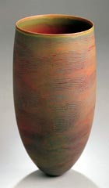

| Grains
of Sand in the Sun
Australian ceramist Pippin Drysdale in the Museum for Applied Art.
By Pamela Dörhöfer
The
Australian ceramic artist Pippin Drysdale
says her works are as “sophisticated” as she herself
would like to be. Her ceramics radiate quiet and nobility, and yet
conceal surprises, as their surfaces change with the perspective
from which they are viewed. What from a distance often appears to
be monochromatic, reveals fine nuances on close viewing, a play
of subtle light and color effects, attributes with which it would
also be possible to describe a desert. And there are further parallels
between the works of art and apparently barren nature. The largely
fine lines winding around the form of these vessels are sometimes
even, other times broken, and in some places are even coarse, evoking
traces in the sand that the wind has blown away. The objects are
a response to an excursion over the Tanami desert in an airplane.
In her most recent works Drysdale has captured her impressions of
the lonely landscapes in the northwestern section of the continent
from a bird’s perspective. 26 examples of this series are
currently on view in an exhibition entitled “Red Earth”
by Heidelberg gallery owner Marianne Heller that is being held in
the Museum of Applied Arts in Frankfurt.
The approximately 50 centimeter tall vessels are the essence of
emotional experience and aesthetic reflection and the result of
month-long experiments, at the end of which Pippin Drysdale found
an elaborate technique that express her mental images. The procedure
is far from reliable: some 40 percent of the output is lost when
fired. However, when everything goes well, form and décor
merge into a unity of the greatest harmony.
While the form impresses with its refined simplicity (and by virtue
of its sheer existence), the shaping of the surface fascinates with
its extraordinary structure, iridescent and multi layered like coarsely
woven natural silk. Drysdale achieves this effect through many layers
of colored glaze, in which she subsequently cuts horizontal grooves,
which are then brushed out and filled with thickly applied color.
Because it dries quickly, the artist can work only on one small
section at a time.
 But
the surface glitters in an infinite number of facets when finished,
like a grain of sand in the sun. On one object the surface gleams
irritatingly in rainbow colors, while on a different object warm
nature tones contrast with a cool turquoise (for Drysdale, a memory
of water in the desert). The lips of other objects glow in a flowing
orange, as though they were the horizon behind which the sun were
setting. But
the surface glitters in an infinite number of facets when finished,
like a grain of sand in the sun. On one object the surface gleams
irritatingly in rainbow colors, while on a different object warm
nature tones contrast with a cool turquoise (for Drysdale, a memory
of water in the desert). The lips of other objects glow in a flowing
orange, as though they were the horizon behind which the sun were
setting.
The landscape in her homeland has inspired the aborigines in a
similar way. The linear decoration typical to Drysdale’s works
is found with them as well: in body painting and as patterns in
baskets, which in their cocoon-like form correspond with the objects
on display here.
Pippin Drysdale is, like many contemporary Australian artists,
affected by the culture of the aborigines. Her most recent works
demonstrate, however, that she has found her own unmistakable language,
one that incorporates tradition and yet gives birth to something
fascinatingly new.
By kind permission of Frankfurter
Rundschau: Title: Sandkörner in der Sonne; Author:
Pamela Dörhöfer; FR: 11. February 2003.
Press Release
More Articles
|